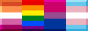
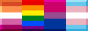

home
Hello, I'm Klug or Eudaemonics (ey/its). I'm a coastal woodland creature that turned human, and this is my digital hermitage where I make things and document little bits of my life. I'm a hobbyist artist and writer and hope to develop my own game someday... For now, I just write about them!
I can also be found on BlueSky and Tumblr. I very sporadically post on the fediverse.
now.
- Life:
- Looking for work, but doing a lot of writing, drawing, and streaming in the meantime.
- 本語を勉強しています。時間があるだからさ、もっと本気になってきました。(もし間違いがある教えてくださいｗｗ) 2027年に日本に行きたいです!
- Reading:
- I'm Working on It in Therapy by Gary Trosclair
- Pandora Hearts by Jun Mochizuki
- Watching:
- A Man on the Inside
- Bojack Horseman
- Playing:
- Detective Instinct: Farewell, My Beloved
- Pokemon Lazarus
- More on backloggery
- Listening:
- "All the Worst Things" by Couchsleepers
- The Healthy Compulsive Project
recent entries


 
